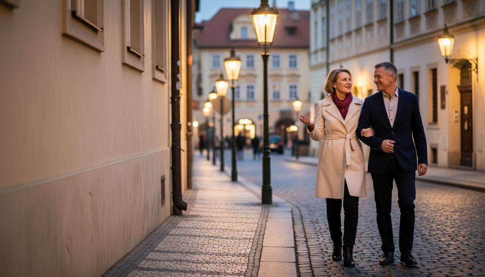
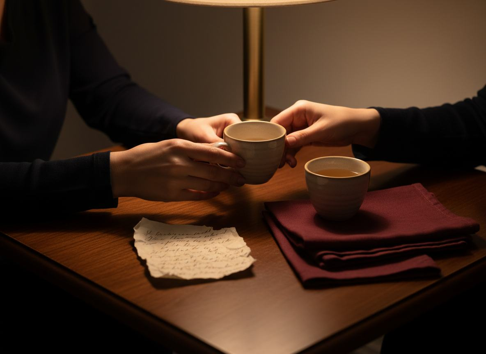

CESTOU DOMŮ
Když se dva lidé znovu potkají ve stejném rytmu.
Někdy se vzdálenost neobjeví ve velkých hádkách. Jen se večery zkrátí, doteky se stanou opatrnějšími a muž začne přemýšlet, jestli si toho partnerka všimla.
Nové video ukazuje jeden nenápadný detail, který může změnit způsob, jakým se na tuto chvíli díváme.
PUSTIT KRÁTKÉ VIDEOCitlivý redakční pohled na důvěru, blízkost a to, co zůstává mezi slovy.

STEJNÝ RYTMUS JINÝ POHLED NA DŮVĚRUNěkteré důležité rozhovory začnou ještě před prvním slovem.
CO ZŮSTÁVÁ
Možná nejde o to něco dokazovat, ale znovu najít přirozenost.
Když se muž začne v blízkosti s partnerkou cítit nejistě, často hledá okamžité řešení. Někdy ale pomůže nejprve pochopit, co se skutečně změnilo.
Video otevírá tuto otázku bez nátlaku a bez velkých slibů. Ukazuje malou souvislost, kterou lze v každodenním spěchu snadno přehlédnout.
„Důvěra se často vrací v obyčejných chvílích.“ZJISTIT, CO SE ČASTO PŘEHLÉDNE

MEZI ŘÁDKY
Jedna obyčejná chvíle může otevřít cestu k větší blízkosti.
Dvě ruce. Jeden šálek. Otázka, kterou si pár možná položil už mnohokrát, ale nikdy ji nedokončil. Vysvětlení čeká až ve videu.
PUSTIT CELÉ VYSVĚTLENÍReklamní upozornění: Jedná se o sponzorovaný redakční obsah. Externí video může obsahovat nabídku partnera. Na této stránce se nic nekupuje.
Tato stránka slouží pouze k obecným informačním a redakčním účelům. Neurčuje diagnózu, neposkytuje léčbu a nezaručuje žádný konkrétní osobní výsledek.